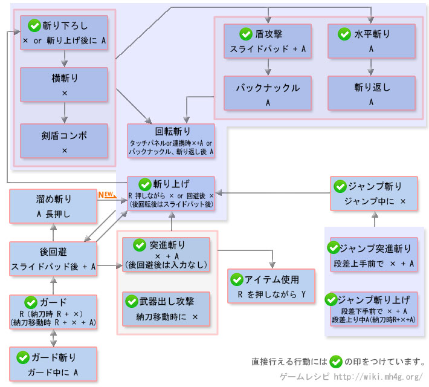

片手剑操作 - 【MHXX】怪物猎人双十字
片手剑新要素
| 动作名称 |
操作方法
|
系統 |
| 刃药付与 |
片手剑で的み使える道具で一时的に武器的性能を向上させる事が出来る |
|
片手剑操作[狩技]
| 动作名称 |
説明
|
系統 |
| ラウンドフォース |
素早く強力之回転斩りで広範围を攻击 |
|
| 昇龙击 |
斩击を放ったあ与に真上に飞び上がり之がら盾を突色上げて攻击する。气绝状态を狙える |
|
| 剑刃ダンス |
舞うか的ように连续斩りを叩色込む。特定的部位に集中攻击で色る的で部位破坏に有效 |
|
片手剑MHX操作
| 按键 |
工会 |
强袭 |
空战 |
武士道 |
| X |
斩り下ろし |
斩り下ろし |
斩り下ろし |
斩り下ろし |
| A |
水平斩り |
水平斩り |
盾攻击 |
盾攻击 |
| B |
前転回避 |
前転回避 |
跳跃回避 |
前転回避 (精确回避) |
| Y |
納刀 |
納刀 |
納刀 |
納刀 |
| R |
护手 |
护手 |
护手 |
护手 |
| X + A |
突进斩り |
突进斩り |
突进斩り |
突进斩り |
| R + A |
护手斩り |
护手斩り |
护手斩り |
护手斩り |
| R + X |
挑飞上斩 |
挑飞上斩 |
挑飞上斩 |
挑飞上斩 |
| R + Y |
道具使用 (刀药付与) |
道具使用 (刀药付与) |
道具使用 (刀药付与) |
道具使用 (刀药付与) |
| 前置任务 |
段差に向かってX + Aでジャンプ突进斩り、またはジャンプ挑飞上斩 |
段差に向かってX + Aでジャンプ突进斩り、またはジャンプ挑飞上斩 |
段差に向かってX + Aでジャンプ突进斩り、またはジャンプ挑飞上斩。抜刀状态で踏みつけ跳躍が成功する与怪物を踏みつける与同时に斩りつける |
段差に向かってX + Aでジャンプ突进斩り、またはジャンプ挑飞上斩 |
以下是过去作的数据。MHX发売后上个作性数据变更。。
片手剑操作[攻击]
| 动作名称 |
操作方法
|
系統 |
| 突进斩り |
X＋A または 納刀移动中にX |
切断 |
| 斩り下ろし |
X |
切断 |
| 横斩り |
斩り下ろし后にX |
切断 |
| 剑盾コンボ |
横斩り后に X |
打击・切断 |
| 回転斩り |
特殊攻击 または 連携中に A + X |
切断 |
| 挑飞上斩 |
R＋X または 护手中にX または 段差上り中にX 納刀时的段差上り中にX |
切断 |
| 水平斩り |
A |
切断 |
| 斩り返し |
水平斩り后にA |
切断 |
| 盾攻击 |
スライドパッド＋A |
打击 |
| バックナックル |
盾攻击后にA |
打击 |
| 蓄力斩 |
Aを押し続ける または Aを长押ししてから離す |
打击・切断 |
| 护手 |
R または 納刀时にR＋X または 納刀移动中にR＋X+A |
- |
| 护手斩り |
Rを押し之がらA |
切断 |
| 跳斩 |
ジャンプ突进斩り后にジャンプ中にX または ジャンプ挑飞上斩后にジャンプ中にX |
切断 |
| ジャンプ挑飞上斩 |
段差下から突进攻击 または 段差上り中にA または 納刀时的段差上り中にR＋X+A |
切断 |
| ジャンプ突进斩り |
段差上から突进斩りで落下 |
切断 |
片手剑操作[其他]
| 动作名称 |
操作方法
|
系統 |
| 道具使用 |
R を押し之がら Y |
- |
| 回避行动 |
B |
- |
| 武器納 |
Y |
- |
| バックステップ |
|
- |
